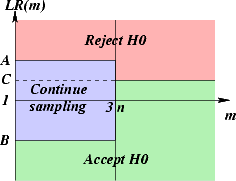

n.
n.
| [Stat Inf II classnotes, ISI, Kolkata] |
E(T)However, with some positive probability T might exceed n by a large margin. In fact, T may become so very large that it becomes impossible to continue sampling for that long. Though this rarely happens in practice, this is certainly a drawback of the SPRT in principle. To redress this Wald suggested the method of truncation, which is the following rule of thumb.
Suppose you want to attain probabilities α and β of errors. Let nbe the smallest sample size required by a fixed sample size test to achieve these. Let T be the random sampling size required by SPRT. Then define a truncated stopping time T' asThus, the truncated SPRT(A,B) may be graphically represented as follows. Here we are considering the graph of LR(m) against m, where LR(m) is the likelihood ratio based on sample of size m. Different regions of the (m,LR(m)) plane correspond to "accept H0", "reject H0" and "continue sampling" decisions.Observe that T' is again a stopping time. Now choose a cut-off point, C. (Often C is chosen to be 1.) Continue sampling up to T'. If T' < n, then use the original SPRT, else consider the likelihood ratio (LR) of the sample collected so far. Reject H0 if and only if LR exceeds C.
T' = T if T 3 n else

Exercise TRUNC.1:
Consider the testing
H0: θ = 0 Vs. H1: θ = 1.We want to achieve α = 0.05 and β = 0.8, based on data X1,X2,... iid N(θ,1).Derive the truncated SPRT. |